1. Nhận xét 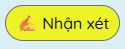
Cho người dùng đóng góp ý tưởng xây dựng trang web và nhận xét quá trình học tập tại trung tâm
2. Tư duy
Trò chơi Tháp Hà Nội 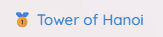
Một trò chơi logic cổ điển giúp rèn luyện khả năng phân tích và giải quyết vấn đề. Phù hợp với học sinh, sinh viên muốn phát triển tư duy logic theo cách thú vị và trực quan.
Đánh giá tư duy 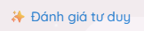
Bài kiểm tra sơ bộ dành cho học sinh lớp 12 nhằm xác định năng lực tư duy, từ đó đề xuất lộ trình học tập phù hợp tại trung tâm.
(Tính năng đang cập nhật...)
3. Hỗ trợ thi 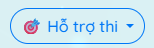
Tra điểm thi
Tra cứu điểm thi nhanh chóng từ các nguồn chính thức. Hệ thống sẽ sớm tích hợp tự động hoá theo tên hoặc mã học sinh.
Đổi điểm HSA 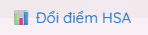
Công cụ chuyển đổi điểm HSA sang thang điểm chuẩn quốc gia, giúp học sinh dễ dàng theo dõi năng lực.
Đếm ngược kỳ thi 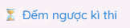
Hiển thị thời gian còn lại đến các kỳ thi quan trọng như THPT, ĐGNL, HSA... Giúp học sinh quản lý thời gian ôn tập hiệu quả.
4. Cầu may mắn 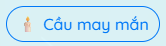
Cho người dùng có thể cầu may khi không có điều kiện di chuyển hoặc thời tiết không thuận lợi. Kèm theo được đọc qua rất nhiều thông tin chi tiết
5. Đồng hồ 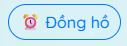
Cho người dùng có thể hẹn giờ hoặc đặt báo thức nếu không có điện thoại hoặc đang làm bài tập / làm việc trên máy tính
6. Trực quan 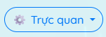
Mô phỏng 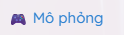
Trình diễn mô phỏng trực quan các khái niệm khoa học hoặc toán học. Ví dụ: chuyển động vật lý, hệ sinh thái, v.v... nhằm tăng sự hứng thú khi học.
Thuật toán 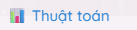
Trình bày trực quan các thuật toán nổi bật như tìm kiếm, sắp xếp, đệ quy bằng biểu đồ và hoạt ảnh dễ hiểu. Phù hợp cho học sinh mới học lập trình.
7. Tools 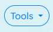
Swap Face 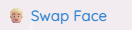
Công cụ cho phép hoán đổi khuôn mặt trong hình ảnh hoặc video
Create AI Picture 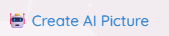
Công cụ tạo hình ảnh AI theo mô tả
Math AI 
Dùng AI giải toán để tham khảo.
8. Casio 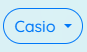
Cách dùng Casio mọi phiên bản trên IOS/Android 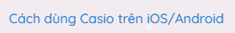
Hướng dẫn chi tiết cách sử dụng máy tính Casio trên các nền tảng iOS và Android trong trường hợp không có máy tính mang theo đi học.
Casio 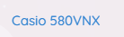
Web máy tính casio khi đã xem xong hướng dẫn bên trên
9. XẾP HẠNG 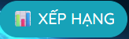
Cho biết xếp hạng của các học sinh đang theo học lớp thầy Piu tại trung tâm
10. Chat bot nhún góc phải TRÊN
Cho người dùng có thể hỏi nhanh 1 vài thông tin cơ bản, nhanh và chính xác
11. Hộp quà nhún góc phải DƯỚI
Web quay phần quà cho các bạn học sinh đạt điểm cao tại trung tâm
12. Danh sách môn TOÁN các khối
Mục lục và tài liệu của các lớp từ 6-12 khi theo học tại trung tâm. Với đầy đủ các chuyên đề, bài tập trắc nghiệm, ....